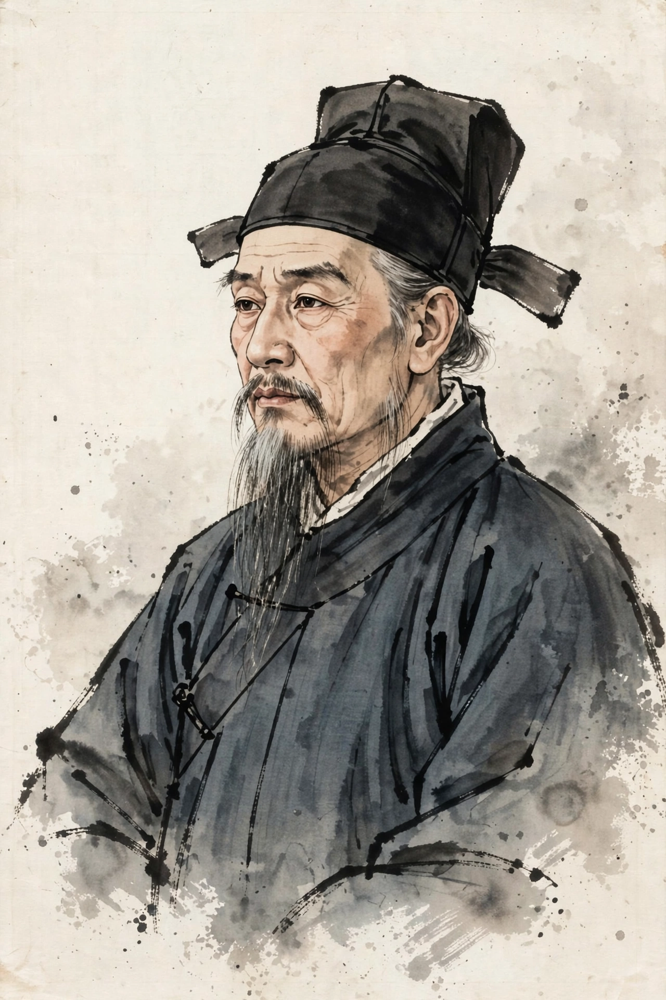

| Born | c. 1500–1505, Huai'an, Jiangsu, Ming China |
|---|---|
| Died | c. 1580–1582 |
| Occupation | Novelist, poet, minor official |
| Notable work | Journey to the West (attributed) |
| Courtesy name | Ruzhong (汝忠) |
| Art name | Sheyang Shanren (射陽山人, "Hermit of Sheyang") |
Wu Cheng'en (traditional Chinese: 吳承恩; simplified Chinese: 吴承恩; pinyin: Wú Chéng'ēn; c. 1500–1582, or 1505–1580) was a Chinese novelist, poet, and minor official of the Ming dynasty, best known as the traditionally attributed author of Journey to the West, one of the Four Great Classical Novels of Chinese literature.
Wu was born in Huai'an, in present-day Jiangsu province, into a family of modest means with scholarly pretensions; his father, a silk merchant, had received some education and encouraged the boy's precocious literary talent. Wu gained a local reputation as a writer of poetry, prose, and witty occasional pieces, but repeatedly failed the higher imperial examinations that would have opened a serious official career. Only in his sixties, after decades of trying, was he granted a tribute-student status and appointed to minor posts — serving briefly as a county vice-magistrate in Zhejiang before resigning, disillusioned. He spent his final years in relative poverty at home, supporting himself in part by selling his writings and calligraphy.
The 100-chapter novel Journey to the West (Xiyouji), first published in 1592 by the Shidetang publishing house in Nanjing, appeared anonymously — as was typical for vernacular novels, a genre Ming literati considered disreputable. Wu Cheng'en's authorship was proposed only in the early 20th century, when scholars including Hu Shih and Lu Xun pointed to entries in Huai'an local gazetteers listing a Journey to the West among Wu's works, and to his surviving literary collection, which contains a poem congratulating a friend on the "Record of the Western Journey" material and demonstrates his deep familiarity with the monkey-pilgrim story cycle. Although the gazetteer entry may originally have referred to a geographical or travel work, and some modern scholars urge caution, the attribution to Wu Cheng'en is now standard in Chinese and Western scholarship alike.
Wu's surviving literary collection, the Sheyang Xiansheng Cun'gao ("Remaining manuscripts of the Hermit of Sheyang"), preserves four volumes of poetry and prose, including nature writing about his home region. Gazetteer records also credit him with a fantastical account of the local deity and region, the Yuding Ji ("Records of the Imperial Tripod"), now largely lost. He was known in his lifetime chiefly as a poet and humorous essayist; his fame as a novelist is entirely posthumous and rests on the Journey to the West attribution.
Journey to the West — the comic-fantastic tale of the monk Tang Sanzang's pilgrimage to India guarded by Sun Wukong the Monkey King, Zhu Bajie, and Sha Wujing — has become the most widely read pre-modern Chinese novel in the world, endlessly adapted in opera, film, television, animation, and video games. Wu's former residence in Huai'an is preserved as a memorial museum, and his home city promotes him as its most famous literary son.